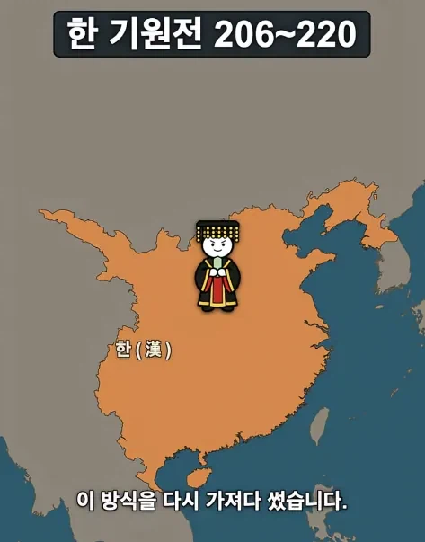
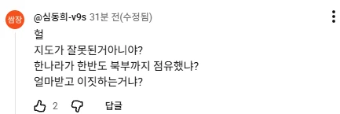
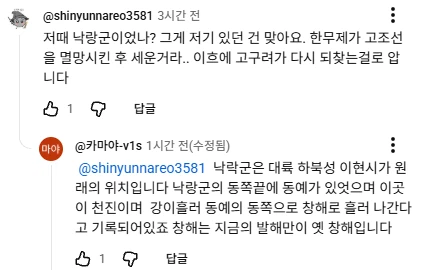
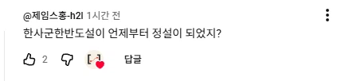
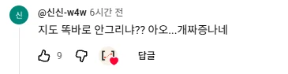
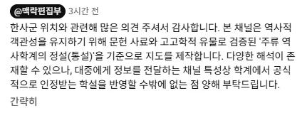

한사군이 한반도에 있는거만으로 동북공정 소리들음
아니 그럼 미천왕이 멸망시킨 낙랑군은 뭔데요...






한사군이 한반도에 있는거만으로 동북공정 소리들음
아니 그럼 미천왕이 멸망시킨 낙랑군은 뭔데요...
저렇게 한나라랑 한사군 위치를 동시에 나타낸 지도를 교과서에서 본 적은 없어서 낯설긴 하다
어..한나라면 고조선 멸망시키고 세운 한사군이 저기 위치 아닌가?
삼국지에서도 공손찬에 관련해서 나온것도 있고 드라마 주몽에서 나온 걸 본 적 있는데
대륙백제설 주장하고 그러는 분들인가봄
대방군까지 얽히면 지도 보기 더 헷갈림
딴얘기긴 한데 교보문고 가니깐 청소년 추천도서의 환국 알아보기 였나 책 있었는데
진짜 딴얘기네..
ㅋㅋㅋ
정확히는 저 낙랑군이 우리가 생각하는 총독을보내서 직접다스리는 그럼 개념은 아님
추후 역사에 고조선세력이 반란을 일으키는거보면 완전히 다스리는지역은 아니였음
근데 뭐 지도를 저렇게 표현한게 마냥 틀린건 아니긴하지
국경의 개념도 잘 없을때라 지배영향권 정도가 될듯
와 저때부터 38선이 라고할뻔
이 개좆같은 떼놈새끼들아
저래서 일본은 닌자로 나루토 만들때 우리나라는 게임도 못만들고 애니도 못만들고 사극만들때도 불편하지 않게 만들어야했음
고조선 박살나고 만들어진게 저거잖아
근데 고대 행정구역을 저렇게 현대적인 지도의 모습으로 해석하는 것도 문제가 있을거 같음
유튜브에 histroy map영상 몇개보면 병자호란이후 조선은 청나라의 간접지배지역처럼 표기된곳 많은데 그거보면 놀라뒤집어지겠네ㅋㅋ
유럽 열강들이 보기엔 조선은 청나라 속국, 식민지였음 일본군이 조선 진주할때 내세운 핑계가 조선의 독립 도와주겠다였지 않았나
원간섭기란 표현도 웃김 원지배기라고 해야지 ㅋㅋ
아 어쨋든 한번도 주권 안 뺐겼다고
근데 요즘 AI 쓰는 유튜버들은 진짜 지도가 야랄났던데. 탈북 과정 보여주는데 휴전선이 경상도랑 전라도쪽에 설치돼있고 난리도 아니더라. 태국을 거쳐서 한국으로 왔다고 하는데 비행기는 일본에 상륙하고.
고조선이 배신자들 떄문에 멸망한 후 한 4군 솔직히 대충 배운거 같음
한사군 존재하지 않았나? 점점쇠락해가다 끈질기게 살아남은 고구려가 잘 잡아먹은걸로 아는데 원래도 발전된 지역이긴 하다만 고구려입장에선 나름 한나라에서 온 문물등 이것저것 직통으로 받아오며 발전시켜놓은거 혼란스러울때 확 잡아먹은거라
촹내.. 고구려가 저 한사군을 밀어내고 한민족국가 기틀 세운게 더 드라마틱한데..
요즘 매우 궁금한거
소정방은 진짜 신라에서 죽었냐?
실체가 있게 기능한건 낙랑(대방) 정도?
BC 108이 고조선 멸망이었고, 이후 설치한 4군 중 진번, 임둔은 얼마 가지도 못했고(BC 82에 폐지), 현도도 결국은 BC 75에 한반도 북부행이었고.... 이후 고구려한테 밀려서 계속 이동하다 요동에서 사라졌고....
저 면이 연결되었다기 보다는 한번 설치된 군현을 죄다 중첩시킨거로 봐야 할거 같은데....
ㅇㅇ 최대한 짧게 어영부영 넘어감
각 나라 역사는 자국 학교에서 가르치는 과정에선 거의 마사지가 들어간다고 생각해야함
해외에서 한국사 전공하신 분들이 훨씬 객관적임